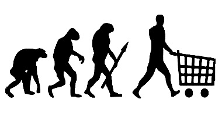

Neoclassical School
Individuals know what they are doing, so leave them alone – except when markets malfunction.
The Neoclassical school arose in the 1870s, from the works of William Jevons (1835–82) and Leon Walras (1834–1910). It was firmly established with the publication of Alfred Marshall’s Principles of Economics in 1890.
Around Marshall’s time, Neoclassical economists also succeeded in changing the name of the discipline from the traditional ‘political economy’ to ‘economics’. The change signalled that the Neoclassical school wanted its analysis to become a pure science, shorn of political (and thus ethical) dimensions that involve subjective value judgements.
Demand factors, individuals and exchanges: differences with the Classical school
The Neoclassical school claimed to be the intellectual heir of the Classical school but felt itself to be sufficiently different to attach the prefix ‘Neo’. The key differences are as follows.
It emphasized the role of demand conditions (derived from the subjective valuation of products by consumers) in the determination of the value of a good. Classical economists believed that the value of a product is determined by supply conditions, that is, the costs of its production. They measured the costs by the labour time expended in producing it – this is known as the labour theory of value. Neoclassical economists emphasized that the value (which they called the price) of a product also depends on how much the product is valued by potential consumers; the fact that something is difficult to produce does not mean that it is more valuable. Marshall refined this idea by arguing that demand conditions matter more in determining prices in the short run, when supply cannot be changed, while supply conditions matter more in the long run, when more investments (disinvestments) can be made in facilities to produce more (less) of what is demanded more (less). The school conceptualized the economy as a collection of rational and selfish individuals, rather than as a collection of distinct classes, as the Classical school did. The individual as envisaged in Neoclassical economics is a rather one- dimensional being – a ‘pleasure machine’, as he was called, devoted to the maximization of pleasure (utility) and the minimization of pain (disutility), usually in narrowly defined material terms. This severely limits the explanatory power of Neoclassical economics.
The Neoclassical school shifted the focus of economics from production to consumption and exchange. For the Classical school, especially Adam Smith, production was at the heart of the economic system. Smith was deeply interested in how the changes in the organization of production were transforming the economy. He had a view of history in which societies develop in stages according to the dominant form of production – hunting, pastoralism, agriculture and commerce (this idea was further developed by Karl Marx). In contrast, in Neoclassical economics, the economic system is essentially envisaged as a web of exchanges, ultimately driven by choices made by ‘sovereign’ consumers. There is little discussion of how actual processes of production are organized and changed.
Self-interested individuals and self-equilibrating markets: similarities with the Classical school
Despite these differences, the Neoclassical school inherited and developed two central ideas of the Classical school. The first is the idea that economic actors are driven by self-interest but that the competition in the market ensures that their actions collectively produce a socially benign outcome. The other is the idea that markets are self- equilibrating. The conclusion is, as in Classical economics, that capitalism – or, rather, the market economy, as the school prefers to call it – is a system that is best left alone, as it has a tendency to revert to the equilibrium.
This laissez-faire conclusion of the Neoclassical school was further intensified by a critical theoretical development in the early twentieth century, intended to allow us to judge social improvements in an objective way. Vilfredo Pareto (1848–1923) argued that, if we respect the rights of every sovereign individual, we should consider a social change an improvement only when it makes some people better off without making anyone worse off. There should be no more individual sacrifices in the name of the ‘greater good’. This is known as the Pareto criterion and forms the basis for all judgements on social improvements in Neoclassical economics today.[76] In real life, unfortunately, there are few changes that hurt no one; thus the Pareto criterion effectively becomes a recipe to stick to the status quo and let things be – laissez faire. Its adoption thus imparted a huge conservative bias to the Neoclassical school.
The anti-free-market revolution: the market failure approach
Two theoretical developments in the 1920s and the 1930s severed the apparently unbreakable link between Neoclassical economics and the advocacy of free-market policies. After these developments, it has become impossible to equate Neoclassical economics with free-market economics, as some people still mistakenly do.
The more fundamental of these was the birth of welfare economics, or the market failure approach, developed by Cambridge professor Arthur Pigou in the 1920s. Pigou argued that there are occasions when market prices fail to reflect the true social costs and benefits. For example, a factory may pollute air and water because air and water have no market prices and thus it can treat them as free goods. But as a result of such ‘over-production’ of pollution, the environment is destroyed, and the society suffers.
The problem is that the effects of some economic activities are not priced in the market and thus not reflected in economic decisions – this is known as an externality. In this case, it would be justified for the government to make the factory, which is said to create a negative externality, pollute less through pollution taxes or regulations (e.g., a fine on excessive release of effluents). Conversely, there may be activities that have a positive externality. An example may be research and development (or R&D) activities by a company. By generating new knowledge that can be used by others, R&D creates more value than what accrues to the company conducting it. On this occasion, the government would be justified to pay subsidies to anyone who does R&D so that there would be more of it. Subsequently, other types of market failure were added to Pigou’s externality.
A more minor yet important modification came in the 1930s, in the form of the compensation principle. The principle proposes that a change may be deemed a social improvement even when it violates the Pareto criterion (in the sense of there being some losers), if the total gains for the gainers are large enough to compensate all the losers and still leave something behind. By allowing them to endorse a change that may hurt some people (but can fully compensate for their damages), the compensation principle has allowed Neoclassical economists to avoid the ultra-conservative bias of the Pareto criterion. Of course, the trouble is that the compensation is rarely made in reality.
Precision and versatility: the strengths of the Neoclassical school
The Neoclassical school has some unique strengths. Its insistence on breaking phenomena down to the individual level gives it a high degree of precision and logical clarity. It is also versatile. It may be very difficult for someone to be a ‘right-wing’ Marxist or a ‘left-wing’ Austrian, but there are many ‘left-wing’ Neoclassical economists, such as Joseph Stiglitz and Paul Krugman, as well as very ‘right-wing’ ones, like James Buchanan and Gary Becker. To exaggerate only slightly, if you are clever enough, you can justify any government policy, any corporate strategy, or any individual action with the help of Neoclassical economics.
Unrealistic individuals, over-acceptance of the status quo and neglect of production: limitations of the Neoclassical school
The Neoclassical school has been criticized for assuming too strongly that people are selfish and rational. From soldiers selflessly taking bullets for their comrades to highly educated bankers and economists believing in the fairy tale of never-ending financial boom (until 2008), there is simply too much evidence against this assumption.

Neoclassical economics is too accepting of the status quo. In analysing individual choices, it accepts as given the underlying social structure – the distribution of money and power, if you will. This makes it look at only choices that are possible without fundamental social changes. For example, many Neoclassical economists, even the ‘liberal’ Paul Krugman, argue that we should not criticize low-wage factory jobs in poor countries because the alternative may be no job at all. This is true, if we take the underlying socioeconomic structure as given. However, once we are willing to change the structure itself, there are a lot of alternatives to those low-wage jobs. With new labour laws that strengthen worker rights, land reform that reduces the supply of cheap labour to factories (as more people stay in the countryside) or industrial policies that create high-skilled jobs, the choice for workers can be between low-wage jobs and higher-wage ones, rather than between low-wage jobs and no jobs.
The Neoclassical school’s focus on exchange and consumption makes it neglect the sphere of production, which is a large – and the most important, according to many other schools of economics – part of our economy. Commenting on this deficiency, Ronald Coase, the Institutionalist economist, in his 1992 Nobel Economics Prize lecture, disparagingly described Neoclassical economics as a theory fit only for the analysis of ‘lone individuals exchanging nuts and berries on the edge of the forest’.